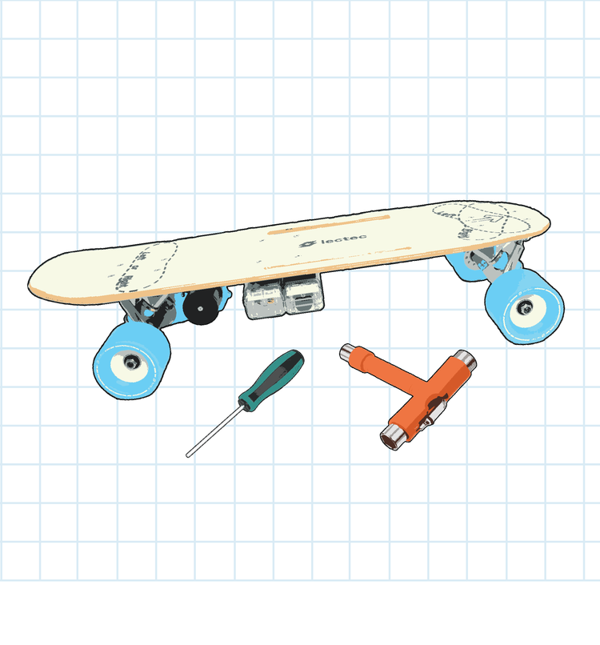
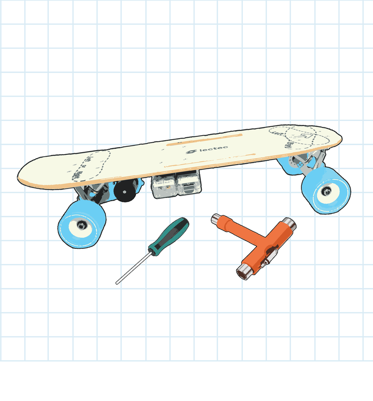
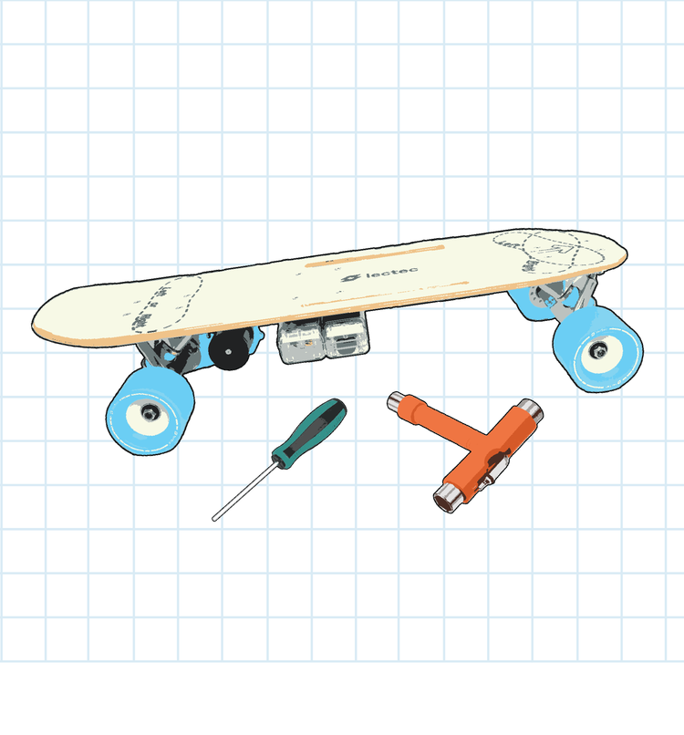

Essential Tips to Ride for your safety
Follow the necessary guidelines while building scooters or boards
Building your own electric scooter or skateboard is an exciting and rewarding STEM project, but safety should always be a top priority. Using high-quality parts and following correct assembly steps significantly reduces the risk of mechanical failures and ensures a smooth ride.
Safety Tips During Assembly:
- Secure All Bolts and Screws: Loose components can lead to instability and increase the risk of accidents.
- Check the Braking System: Ensure brakes are responsive and functional before taking your electric ride out.
- Test Electrical Connections: Properly connected wires help prevent short circuits and electrical hazards.
- Inspect the Wheels and Bearings: Smooth, efficient movement is essential for safe and comfortable riding.
- Use Safety Pads and Protective Gear: Equip yourself with essential electric scooter and skateboard safety pads to minimize injury risks.
Shop the best Kits with us
We offer a wide range of electric scooter and skateboard kits, including all the necessary components for a safe and enjoyable ride. Our kits are designed with safety in mind, ensuring that you have everything you need to build your own electric ride.
Explore our collection of electric scooter and skateboard kits today and take the first step towards building your own electric ride!
 

See Kits

See Kits
Test in safe places before ride
Before you take your electric skateboard or scooter onto busy streets or challenging terrains, it’s crucial to test it in a safe and controlled environment. This ensures that your ride is functioning correctly and allows you to get familiar with handling it.
A few trial runs in a safe area can make a big difference in avoiding accidents when riding in more challenging environments. Scooter Safety for Uphill Rides Riding uphill requires extra attention to avoid losing control or causing strain on your scooter’s motor.
Use Essential accessories
Safety is greatly enhanced with the right accessories. Whether you're riding an electric
scooter or skateboard, these accessories can significantly reduce risks and improve your
riding experience.
Must-Have Safety Accessories:


Shop Accessories
Must-Have Safety Accessories:
Shop Accessories